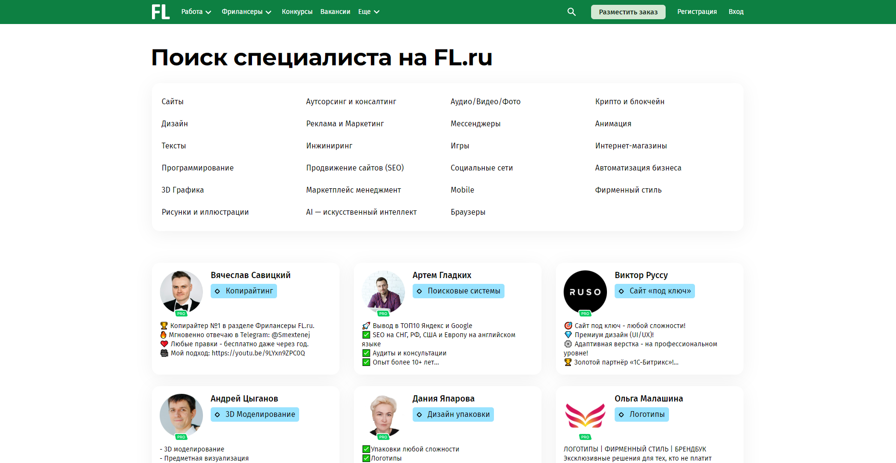
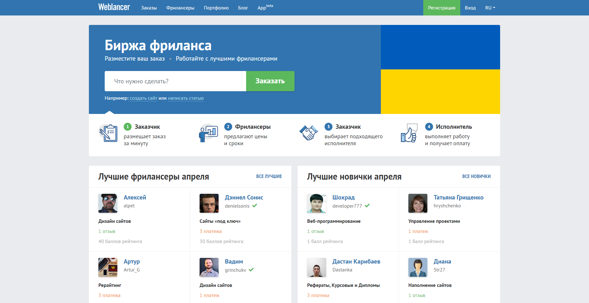
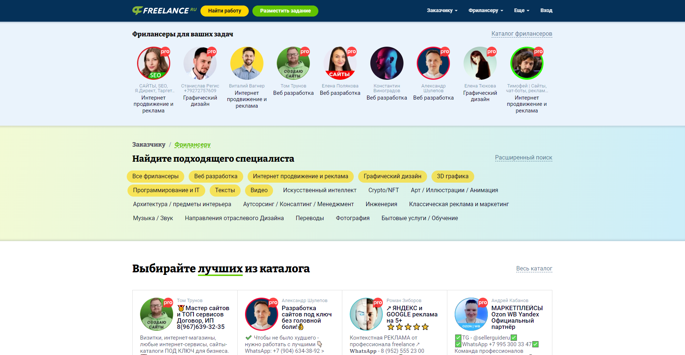

Приветствуем вас на разделе сайта Проект КА!0Б. Здесь вы получите необходимую информацию для получения прибыли в интернете, используя своё творчество, на поприще фриланса!
О Фрилансе
Фриланс — это форма занятости, при которой работник (фрилансер) работает независимо от постоянной занятости с одним работодателем. Фрилансеры обычно выполняют задания на удалённой основе и получают заработок за конкретные проекты или услуги, которые они предоставляют. Работа на фрилансе позволяет людям выбирать свой график работы, место работы и тип заданий, которые они хотят выполнять.
Плюсы:
–Гибкий график работы: Фриланс позволяет работать в удобное время, что особенно удобно для тех, кто предпочитает гибкий график или нуждается в совмещении работы с другими обязательствами.
–Локация: Фрилансеры могут работать из любой точки мира, где есть доступ в интернет. Это открывает возможности для путешествий и переездов, не теряя рабочей деятельности.
–Выбор проектов: Фрилансеры имеют возможность выбирать проекты, которые соответствуют их интересам, навыкам и опыту. Это способствует удовлетворенности от работы и повышению мотивации.
–Повышенная оплата: На фрилансе часто можно получить более высокую оплату за выполнение проектов, особенно если фрилансер обладает уникальными навыками или специализацией.
–Развитие навыков: Работа на различных проектах и с разными клиентами способствует развитию разносторонних навыков и профессиональному росту.
Минусы:
–Нестабильный доход: Доход на фрилансе может быть нестабильным, поскольку количество заказов может варьироваться в зависимости от сезона, спроса и других факторов.
–Отсутствие гарантированных выгод: Фрилансеры могут столкнуться с задержками в оплате или неплатежами со стороны клиентов, что создает финансовые неопределенности.
–Нехватка социальных льгот: Фрилансеры часто лишены социальных льгот, таких как медицинское страхование или пенсионное обеспечение, которые обычно предоставляются работникам на постоянной основе.
–Конкуренция: На рынке фриланса высокая конкуренция, что может затруднить привлечение новых клиентов и удержание существующих.
–Управление временем и самодисциплина: Работа на фрилансе требует хорошего управления временем и высокой самодисциплины, чтобы достигать целей и соблюдать сроки выполнения проектов.
Лучшие сайты для начала фриланса.

FL — одна из старейших и наиболее известных платформ для фрилансеров в России. Она предлагает широкий спектр проектов и специализаций.
Плюсы:
-Большое сообщество заказчиков и исполнителей.
-Возможность долгосрочного сотрудничества с клиентами.
-Система рейтингов и отзывов для повышения доверия.
Минусы:
-Высокая конкуренция среди исполнителей.
-Комиссии за сделки и платный доступ к некоторым функциям.

Weblancer — популярный сайт для поиска фриланс-работы, особенно в области веб-разработки и дизайна.
Плюсы:
-Удобный интерфейс и легкий поиск проектов.
-Наличие полезных статей и советов для фрилансеров.
-Отсутствие абонентской платы за использование платформы.
Минусы:
-Относительно меньше проектов по сравнению с FL.ru.
-Наличие платных опций для повышения видимости профиля.

Freelance привлекает фрилансеров различных специализаций, от копирайтинга до программирования.
Плюсы:
-Простота регистрации и начала работы.
-Возможность получения прямых заказов без посредников.
-Функция "Безопасная сделка" для защиты прав обеих сторон.
Минусы:
-Меньше функциональных возможностей по сравнению с крупными платформами.
-Необходимость активного поиска заказов из-за меньшего числа предложений.